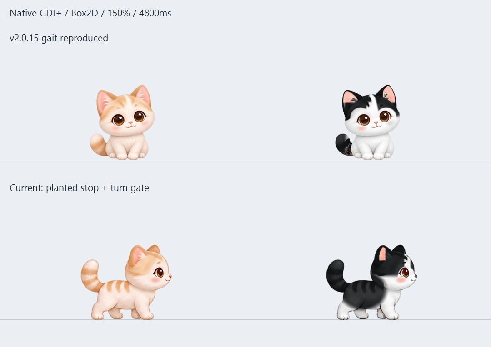

위쪽은 이전 보행 로직의 재현, 아래쪽은 수정된 보행입니다. 크림치즈냥과 턱시도냥에 같은 동작을 적용했습니다.
Windows GDI+와 Box2D에서 만든 10.5초 진단 영상입니다. 물리 계산은 60Hz, 영상은 20FPS입니다. 실제 바탕화면 녹화나 구버전 실행파일의 녹화는 아닙니다. 걷기 원화 8장은 그대로 사용했으며, 중간 자세가 부족한 구간의 끊김은 남아 있습니다.

배율 이미지는 합성 DPI 검사입니다. 실제 혼합 배율 듀얼 모니터 환경의 검증과는 구분합니다.